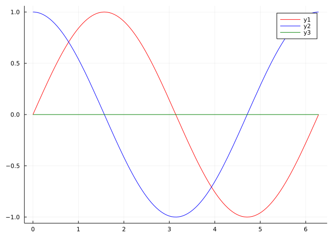
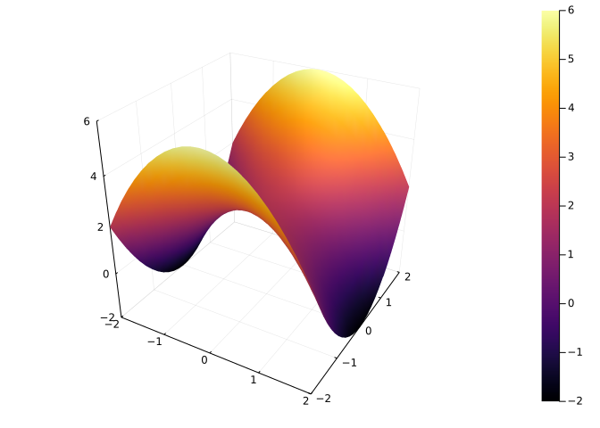

f(x) = exp(x) * 2xf (generic function with 1 method)The Julia programming language with a design that makes it well suited as a supplement for the learning of calculus, as this collection of notes is intended to illustrate.
As Julia is open source, it can be downloaded and used like many other programming languages.
Julia can be used through the internet for free using the mybinder.org service. This link: launch binder will take you to website that allows this. Just click on the CalcululsWithJulia.ipynb file after launching Binder by clicking on the badge. Binder provides the Jupyter interface.
Here are some Julia usages to create calculus objects.
The Julia packages loaded below are all loaded when the CalculusWithJulia package is loaded.
A Julia package is loaded with the using command:
The LinearAlgebra package comes with a Julia installation. Other packages can be added. Something like:
These notes have an accompanying package, CalculusWithJulia, that when installed, as above, also installs most of the necessary packages to perform the examples.
Packages need only be installed once, but they must be loaded into each session for which they will be used.
Packages can also be loaded through import PackageName. Importing does not add the exported objects of a function into the namespace, so is used when there are possible name collisions.
Objects in Julia are “typed.” Common numeric types are Float64, Int64 for floating point numbers and integers. Less used here are types like Rational{Int64}, specifying rational numbers with a numerator and denominator as Int64; or Complex{Float64}, specifying a comlex number with floating point components. Julia also has BigFloat and BigInt for arbitrary precision types. Typically, operations use “promotion” to ensure the combination of types is appropriate. Other useful types are Function, an abstract type describing functions; Bool for true and false values; Sym for symbolic values (through SymPy); and Vector{Float64} for vectors with floating point components.
For the most part the type will not be so important, but it is useful to know that for some function calls the type of the argument will decide what method ultimately gets called. (This allows symbolic types to interact with Julia functions in an idiomatic manner.)
Functions can be defined four basic ways:
function keyword. The end statement ends the definition. The last evaluated command is returned. There is no need for explicit return statement, though it can be useful for control flow.->, as follows:In the following, the defined function, Derivative, returns an anonymously defined function that uses a Julia package, loaded with CalculusWithJulia, to take a derivative:
Derivatve(f::Function) = x -> ForwardDiff.derivative(f, x) # ForwardDiff is loaded in CalculusWithJuliaDerivatve (generic function with 1 method)(The D function of CalculusWithJulia implements something similar.)
function keyword.For mathematical functions \(f: R^n \rightarrow R^m\) when \(n\) or \(m\) is bigger than 1 we have:
(An alternative would be to create a vector of functions.)
Some functions need to pass in a container of values, for this the last definition is useful to expand the values. Splatting takes a container and treats the values like individual arguments.
Alternatively, indexing can be used directly, as in:
Functions are called using parentheses to group the arguments.
When a function has multiple arguments, yet the value passed in is a container holding the arguments, splatting is used to expand the arguments, as is done in the definition F(v) = F(v...), above.
Julia can have many methods for a single generic function. (E.g., it can have many different implementations of addiion when the + sign is encountered.) The types of the arguments and the number of arguments are used for dispatch.
Here the number of arguments is used:
Area(w, h) = w * h # area of rectangle
Area(w) = Area(w, w) # area of square using area of rectangle defintionArea (generic function with 2 methods)Calling Area(5) will call Area(5,5) which will return 5*5.
Similarly, the definition for a vector field:
takes advantage of multiple dispatch to allow either a vector argument or individual arguments.
Type parameters can be used to restrict the type of arguments that are permitted. The Derivative(f::Function) definition illustrates how the Derivative function, defined above, is restricted to Function objects.
Optional arguments may be specified with keywords, when the function is defined to use them. Keywords are separated from positional arguments using a semicolon, ;:
(0.8660254037844386, 9.987492177719089)The main (but not sole) use of keyword arguments will be with plotting, where various plot attribute are passed as key=value pairs.
The add-on SymPy package allows for symbolic expressions to be used. Symbolic values are defined with @syms, as below.
Assumptions on the variables can be useful, particularly with simplification, as in
Symbolic expressions flow through Julia functions symbolically
Numbers are symbolic once SymPy interacts with them:
The number PI is a symbolic pi.
Use Sym to create symbolic numbers, N to find a Julia number from a symbolic number:
Many generic Julia functions will work with symbolic objects through multiple dispatch (e.g., sin, cos, …). Sympy functions that are not in Julia can be accessed through the sympy object using dot-call notation:
Some Sympy methods belong to the object and a called via the pattern object.method(...). This too is the case using SymPy with Julia. For example:
We use a few different containers:
Tuples are useful for programming. For example, they are uesd to return multiple values from a function.
Unlike tuples, the expected arithmatic from Linear Algebra is implemented for vectors.
These have indexing using square brackets:
Matrices are usually indexed by row and column:
For vectors and matrices - but not tuples, as they are immutable - indexing can be used to change a value in the container:
Vectors and matrices are arrays. As hinted above, arrays have mathematical operations, such as addition and subtraction, defined for them. Tuples do not.
Destructuring is an alternative to indexing to get at the entries in certain containers:
An arithmetic progression, \(a, a+h, a+2h, ..., b\) can be produced efficiently using the range operator a:h:b:
If h=1 it can be omitted:
The range function can efficiently describe \(n\) evenly spaced points between a and b:
0.0:0.7853981633974483:3.141592653589793This is useful for creating regularly spaced values needed for certain plots.
The for keyword is useful for iteration, Here is a traditional for loop, as i loops over each entry of the vector [1,2,3]:
Technical aside: For assignment within a for loop at the global level, a global declaration may be needed to ensure proper scoping.
List comprehensions are similar, but are useful as they perform the iteration and collect the values:
Comprehesions can also be used to make matrices
3×4 Matrix{Float64}:
0.5 0.333333 0.25 0.2
0.333333 0.25 0.2 0.166667
0.25 0.2 0.166667 0.142857(The three rows are for i=1, then i=2, and finally for i=3.)
Comprehensions apply an expression to each entry in a container through iteration. Applying a function to each entry of a container can be facilitated by:
. before an operation instructs Julia to match up sizes (possibly extending to do so) and then apply the operation element by element:3-element Vector{Float64}:
0.8414709848078965
0.9092974268256817
0.1411200080598672This example pairs off the value in bases and xs:
3-element Vector{Float64}:
0.0
0.43067655807339306
0.47712125471966244This example broadcasts the scalar value for the base with xs:
Row and column vectors can fill in:
ys = [4 5] # a row vector
g(x,y) = (x,y)
g.(xs, ys) # broadcasting a column and row vector makes a matrix, then applies f.3×2 Matrix{Tuple{Int64, Int64}}:
(1, 4) (1, 5)
(2, 4) (2, 5)
(3, 4) (3, 5)This should be contrasted to the case when both xs and ys are (column) vectors, as then they pair off (and here cause a dimension mismatch as they have different lengths):
LoadError: DimensionMismatch("arrays could not be broadcast to a common size; got a dimension with lengths 3 and 2")map function is similar, it applies a function to each element:3-element Vector{Float64}:
0.8414709848078965
0.9092974268256817
0.1411200080598672Many different computer languages implement map, broadcasting is less common. Julia’s use of the dot syntax to indicate broadcasting is reminiscent of MATLAB, but is quite different.
The following commands use the Plots package. The Plots package expects a choice of backend. We will use gr unless, but other can be substituted by calling an appropriate command, suchas pyplot() or plotly().
The plotly backend and gr backends are available by default. The plotly backend is has some interactivity, gr is for static plots. The pyplot package is used for certain surface plots, when gr can not be used.
plot(f, a, b)Or
Or with an anonymous function
The time to first plot can be lengthy! This can be removed by creating a custom Julia image, but that is not introductory level stuff. As well, standalone plotting packages offer quicker first plots, but the simplicity of Plots is preferred. Subsequent plots are not so time consuming, as the initial time is spent compiling functions so their re-use is speedy.
Arguments of interest include
| Attribute | Value |
|---|---|
legend |
A boolean, specify false to inhibit drawing a legend |
aspect_ratio |
Use :equal to have x and y axis have same scale |
linewidth |
Ingters greater than 1 will thicken lines drawn |
color |
A color may be specified by a symbol (leading :). |
E.g., :black, :red, :blue |
plot(xs, ys)The lower level interface to plot involves directly creating x and y values to plot:
A symbolic expression of single variable can be plotted as a function is:
The ! Julia convention to modify an object is used by the plot command, so plot! will add to the existing plot:
plot(sin, 0, 2pi, color=:red)
plot!(cos, 0, 2pi, color=:blue)
plot!(zero, color=:green) # no a, b then inherited from graph.
The zero function is just 0 (more generally useful when the type of a number is important, but used here to emphasize the \(x\) axis).
plot(xs, ys)Let \(f(t) = e^{t/2\pi} \langle \cos(t), \sin(t)\rangle\) be a parameterized function. Then the \(t\) values can be generated as follows:
ts = range(0, 2pi, length = 100)
xs = [exp(t/2pi) * cos(t) for t in ts]
ys = [exp(t/2pi) * sin(t) for t in ts]
plot(xs, ys)plot(f1, f2, a, b). If the two functions describing the components are available, thenplot_parametric. If the curve is described as a function of t with a vector output, then the CalculusWithJulia package provides plot_parametric to produce a plot:The low-level approach doesn’t quite work as easily as desired:
4-element Vector{Vector{Float64}}:
[1.0, 0.0]
[-0.6978062125430444, 1.2086358139617603]
[-0.9738670205273388, -1.6867871593690715]
[2.718281828459045, -6.657870280805568e-16]As seen, the values are a vector of vectors. To plot a reshaping needs to be done:
ts = range(0, 2pi, length = 100)
vs = r.(ts)
xs = [vs[i][1] for i in eachindex(vs)]
ys = [vs[i][2] for i in eachindex(vs)]
plot(xs, ys)
This approach is faciliated by the unzip function in CalculusWithJulia (and used internally by plot_parametric):
An arrow in 2D can be plotted with the quiver command. We show the arrow(p, v) (or arrow!(p,v) function) from the CalculusWithJulia package, which has an easier syntax (arrow!(p, v), where p is a point indicating the placement of the tail, and v the vector to represent):
The surface and contour functions are available to visualize a scalar function of \(2\) variables:
The function generates the \(z\) values, this can be done by the user and then passed to the surface(xs, ys, zs) format:
The contour function is like the surface function.
The values can be computed easily enough, being careful where the transpose is needed:
contour can be used for this type of plot - by adjusting the requested contours - the ImplicitPlots package does this to make a plot of the equations \(f(x,y) = 0\). (The CalculusWithJulia package re-uses the implict_plot function.)The pyplot (and plotly) backends allow plotting of parameterized surfaces.
The low-level surface(xs,ys,zs) is used, and can be specified directly as follows:
The CalculusWithJulia package provides vectorfieldplot, used as:
There is also vectorfieldplot3d.
Limits can be investigated numerically by forming tables, eg.:
4×2 Matrix{Float64}:
1.0 0.841471
0.1 0.998334
0.01 0.999983
0.001 1.0Symbolically, SymPy provides a limit function:
Or
There are numeric and symbolic approaches to derivatives. For the numeric approach we use the ForwardDiff package, which performs automatic differentiation.
Numerically, the ForwardDiff.derivative(f, x) function call will find the derivative of the function f at the point x:
The CalculusWithJulia package overides the ' (adjoint) syntax for functions to provide a derivative which takes a function and returns a function, so its usage is familiar
Higher order derivatives are possible as well,
Symbolically, the diff function of SymPy finds derivatives.
Higher order derivatives can be specified as well
Or with a number:
The variable is important, as this allows parameters to be symbolic
There is no direct partial derivative function provided by ForwardDiff, rather we use the result of the ForwardDiff.gradient function, which finds the partial derivatives for each variable. To use this, the function must be defined in terms of a point or vector.
f(x,y,z) = x*y + y*z + z*x
f(v) = f(v...) # this is needed for ForwardDiff.gradient
ForwardDiff.gradient(f, [1,2,3])3-element Vector{Int64}:
5
4
3We can see directly that \(\partial{f}/\partial{x} = \langle y + z\rangle\). At the point \((1,2,3)\), this is \(5\), as returned above.
Symbolically, diff is used for partial derivatives:
Gradient
As seen, the ForwardDiff.gradient function finds the gradient at a point. In CalculusWithJulia, the gradient is extended to return a function when called with no additional arguments:
3-element Vector{Int64}:
0
0
0The ∇ symbol, formed by entering \nabla[tab], is mathematical syntax for the gradient, and is defined in CalculusWithJulia.
3-element Vector{Int64}:
5
4
3In SymPy, there is no gradient function, though finding the gradient is easy through broadcasting:
3-element Vector{Sym}:
y + z
x + z
x + yThe CalculusWithJulia package provides a method for gradient:
The ∇ symbol is an alias. It can guess the order of the free symbols, but generally specifying them is needed. This is done with a tuple:
The Jacobian of a function \(f:R^n \rightarrow R^m\) is a \(m\times n\) matrix of partial derivatives. Numerically, ForwardDiff.jacobian can find the Jacobian of a function at a point:
F(u,v) = [u*cos(v), u*sin(v), u]
F(v) = F(v...) # needed for ForwardDiff.jacobian
pt = [1, pi/4]
ForwardDiff.jacobian(F , pt)3×2 Matrix{Float64}:
0.707107 -0.707107
0.707107 0.707107
1.0 0.0Symbolically, the jacobian function is a method of a matrix, so the calling pattern is different. (Of the form object.method(arguments...).)
3×2 Matrix{Sym}:
cos(v) -u⋅sin(v)
sin(v) u⋅cos(v)
1 0As the Jacobian can be identified as the matrix with rows given by the transpose of the gradient of the component, it can be computed directly, but it is more difficult:
Numerically, the divergence can be computed from the Jacobian by adding the diagonal elements. This is a numerically inefficient, as the other partial derivates must be found and discarded, but this is generally not an issue for these notes. The following uses tr (the trace from the LinearAlgebra package) to find the sum of a diagonal.
The CalculusWithJulia package provides divergence to compute the divergence and provides the ∇ ⋅ notation (\nabla[tab]\cdot[tab]):
F(x,y,z) = [-y, x, z]
F(v) = F(v...)
divergence(F, [1,2,3])
(∇⋅F)(1,2,3) # not ∇⋅F(1,2,3) as that evaluates F(1,2,3) before the divergence1.0Symbolically, the divergence can be found directly:
@syms x y z
ex = [-y, x, z]
sum(diff.(ex, [x,y,z])) # sum of [diff(ex[1], x), diff(ex[2],y), diff(ex[3], z)]The divergence function can be used for symbolic expressions:
The curl can be computed from the off-diagonal elements of the Jacobian. The calculation follows the formula. The CalculusWithJulia package provides curl to compute this:
As well, if no point is specified, a function is returned for which a point may be specified using 3 coordinates or a vector
([0.0, -0.0, 2.0], [0.0, -0.0, 2.0])Finally, the ∇ × (\nabla[tab]\times[tab] notation is available)
For symbolic expressions, we have the ∇ × times notation is available if the symbolic vector contains all \(3\) variables
Numeric integration is provided by the QuadGK package, for univariate integrals, and the HCubature package for higher dimensional integrals.
A definite integral may be computed numerically using quadgk
The answer and an estimate for the worst case error is returned.
If singularities are avoided, improper integrals are computed as well:
SymPy provides the integrate function to compute both definite and indefinite integrals.
Like diff the variable to integrate is specified.
Definite integrals use a tuple, (variable, a, b), to specify the variable and range to integrate over:
Two and three dimensional integrals over box-like regions are computed numerically with the hcubature function from the HCubature package. If the box is \([x_1, y_1]\times[x_2,y_2]\times\cdots\times[x_n,y_n]\) then the limits are specified through tuples of the form \((x_1,x_2,\dots,x_n)\) and \((y_1,y_2,\dots,y_n)\).
(1.333333333333333, 4.440892098500626e-16)The calling pattern for more dimensions is identical.
f(x,y,z) = x*y^2*z^3
f(v) = f(v...)
hcubature(f, (0,0,0), (1, 2,3)) # computes ∫₀¹∫₀²∫₀³ f(x,y,z) dz dy dx(27.0, 0.0)The box-like region requirement means a change of variables may be necessary. For example, to integrate over the region \(x^2 + y^2 \leq 1; x \geq 0\), polar coordinates can be used with \((r,\theta)\) in \([0,1]\times[-\pi/2,\pi/2]\). When changing variables, the Jacobian enters into the formula, through
\[ ~ \iint_{G(S)} f(\vec{x}) dV = \iint_S (f \circ G)(\vec{u}) |\det(J_G)(\vec{u})| dU. ~ \]
Here we implement this:
f(x,y) = x*y^2
f(v) = f(v...)
Phi(r, theta) = r * [cos(theta), sin(theta)]
Phi(rtheta) = Phi(rtheta...)
integrand(rtheta) = f(Phi(rtheta)) * det(ForwardDiff.jacobian(Phi, rtheta))
hcubature(integrand, (0.0,-pi/2), (1.0, pi/2))(0.13333333333904918, 1.9853799966359355e-9)Symbolically, the integrate function allows additional terms to be specified. For example, the above could be done through:
A line integral of \(f\) parameterized by \(\vec{r}(t)\) is computed by:
\[ ~ \int_a^b (f\circ\vec{r})(t) \| \frac{dr}{dt}\| dt. ~ \]
For example, if \(f(x,y) = 2 - x^2 - y^2\) and \(r(t) = 1/t \langle \cos(t), \sin(t) \rangle\), then the line integral over \([1,2]\) is given by:
f(x,y) = 2 - x^2 - y^2
f(v) = f(v...)
r(t) = [cos(t), sin(t)]/t
integrand(t) = (f∘r)(t) * norm(r'(t))
quadgk(integrand, 1, 2)(1.2399213772953277, 4.525271268818187e-9)To integrate a line integral through a vector field, say \(\int_C F \cdot\hat{T} ds=\int_C F\cdot \vec{r}'(t) dt\) we have, for example,
F(x,y) = [-y, x]
F(v) = F(v...)
r(t) = [cos(t), sin(t)]/t
integrand(t) = (F∘r)(t) ⋅ r'(t)
quadgk(integrand, 1, 2)(0.5, 2.1134927141730486e-10)Symbolically, there is no real difference from a 1-dimensional integral. Let \(\phi = 1/\|r\|\) and integrate the gradient field over one turn of the helix \(\vec{r}(t) = \langle \cos(t), \sin(t), t\rangle\).
@syms x::real y::real z::real t::real
phi(x,y,z) = 1/sqrt(x^2 + y^2 + z^2)
r(t) = [cos(t), sin(t), t]
∇phi = diff.(phi(x,y,z), [x,y,z])
∇phi_r = subs.(∇phi, x.=> r(t)[1], y.=>r(t)[2], z.=>r(t)[3])
rp = diff.(r(t), t)
global helix = simplify(∇phi_r ⋅ rp )Then
The surface integral for a parameterized surface involves a surface element \(\|\partial\Phi/\partial{u} \times \partial\Phi/\partial{v}\|\). This can be computed numerically with:
Phi(u,v) = [u*cos(v), u*sin(v), u]
Phi(v) = Phi(v...)
function SE(Phi, pt)
J = ForwardDiff.jacobian(Phi, pt)
J[:,1] × J[:,2]
end
norm(SE(Phi, [1,2]))1.4142135623730951To find the surface integral (\(f=1\)) for this surface over \([0,1] \times [0,2\pi]\), we have:
(4.442882938158366, 2.6645352591003757e-15)Symbolically, the approach is similar:
@syms u::real v::real
exₚ = Phi(u,v)
Jₚ = exₚ.jacobian([u,v])
SurfEl = norm(Jₚ[:,1] × Jₚ[:,2]) |> simplifyThen
Integrating a vector field over the surface, would be similar: